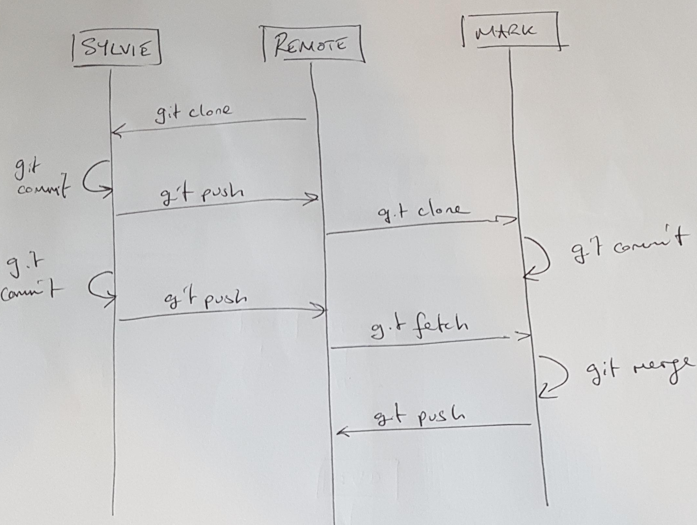

12 Collaboration 101
What is covered here simply scratches the surface. Git is extremely flexible in the workflows that can be set up. A basic approach is that of a centralised repository. This is fairly easy to understand and is simple to set up for small teams.
The concept of remotes is introduced as is an associated workflow.
12.1 No github?
GitHub is a hosting service for git repositories. It also extends some of the git functionality. They have captured the market, mainly because we are all a bit dim.
Before 2005 (ish), GitHub did not exist, and it wasn’t a catastrophe. What did we do? Git has the functionality built into it to allow collaboration via hosting git repositories directly on fileservers. This is a reasonable solution for small teams with access to a common network, but it has its limitations. Nevertheless, most bluechip organisations used this approach during the 2000’s.
Repositories that are retained outside of your local machine are referred to as remotes. It doesn’t matter whether they are hosted on LIQUID, or a random file server or GitHub or BitBucket or Timbuktu. They are still known as remotes.
Remotes allow you to work on a repository collaboratively with your colleagues. This has been standard practice in software development since circa 1760.
We will talk about hosting remotes on fileservers here and then move on to GitHub next.
12.2 So remote
What remote (or remotes) are associated with the example repository that we have been working on? Let’s look.
git remote -vNo remotes.
If at any time you want to review the remotes associated with your repository (you can have more than one remote) then invoke the command that we just used.
12.3 Initialising remotes
Let’s set up a remote on OneDrive. OneDrive is a cloud file-server, but technically we could replace OneDrive with any file-server. For example, we used to have the LIQUID drive at TKI mounted as a network drive and we could use that.
Anyway, just follow along.
git clone --bare first-repo /Users/mark/Library/CloudStorage/OneDrive-TheUniversityofSydney\(Staff\)/first-repo.gitWhy USyd (or Microsoft) uses such ludicrous names for their software is beyond me.
The above takes the repository that we have been working on and moves the git database to OneDrive. If we look at OneDrive then we see:
pwd
## /Users/mark/Library/CloudStorage/OneDrive-TheUniversityofSydney(Staff)/first-repo.git
ls -lrta
## total 48
## drwx------@ 20 mark staff 640 8 Nov 08:36 ..
## -rw-r--r-- 1 mark staff 73 8 Nov 08:36 description
## -rw-r--r-- 1 mark staff 188 8 Nov 08:36 config
## -rw-r--r-- 1 mark staff 618 8 Nov 08:36 packed-refs
## -rw-r--r-- 1 mark staff 21 8 Nov 08:36 HEAD
## drwxr-xr-x@ 11 mark staff 352 8 Nov 08:36 .
## drwxr-xr-x 3 mark staff 96 8 Nov 08:36 info
## drwxr-xr-x 16 mark staff 512 8 Nov 08:36 hooks
## drwxr-xr-x 105 mark staff 3360 8 Nov 08:36 objects
## drwxr-xr-x 5 mark staff 160 8 Nov 08:36 refs
## -rw-r--r--@ 1 mark staff 6148 8 Nov 08:36 .DS_StoreThe first thing to note is that there is no working directory.
Now let’s imagine that I Sylvie has just joined the team as naive Bayesian statistician. Sylvie needs to start work on the first-repo project. First, we need to get the repository onto her local machine.
The process is as follows.
- Go to you Documents folder (or wherever you intend to store your projects)
- Clone the remote
Obviously, I am working off a single laptop clone the repo to some alternative name. I will refer to this location as Sylvie’s repo vs Mark’s repo which is the one that I have been referencing when demonstrating examples.
In contrast to the bare repository remote, we (Sylvie) now has the example files that we have been developing to date.
Note that I called the repo sylvie-first-repo. We can call the local version of the repo whatever we want.
cd /Users/mark/Documents/
git clone /Users/mark/Library/CloudStorage/OneDrive-TheUniversityofSydney\(Staff\)/first-repo.git sylvie-first-repo
ls -lrta
## total 40
## drwxr-xr-x 3 mark staff 96 8 Nov 11:07 ..
## -rw-r--r-- 1 mark staff 100 8 Nov 11:07 .gitignore
## -rw-r--r-- 1 mark staff 2274 8 Nov 11:07 branching.R
## -rw-r--r-- 1 mark staff 242 8 Nov 11:07 hello.R
## -rw-r--r-- 1 mark staff 38 8 Nov 11:07 myscript.R
## drwxr-xr-x 8 mark staff 256 8 Nov 11:07 .
## -rw-r--r-- 1 mark staff 138 8 Nov 11:07 readme.md
## drwxr-xr-x 12 mark staff 384 8 Nov 11:07 .gitLook at the details of the remote associated with Sylvie’s repo:
cd /Users/mark/Documents/sylvie-first-repo/
git remote -v
origin /Users/mark/Library/CloudStorage/OneDrive-TheUniversityofSydney(Staff)/first-repo.git (fetch)
origin /Users/mark/Library/CloudStorage/OneDrive-TheUniversityofSydney(Staff)/first-repo.git (push)The picture now looks like this

Over on the left we have the remote git database. On the right we have Mark who created the remote from his local repository and Sylvie who cloned the remote repository to her local machine. Git isn’t restricted to this centralised architecture (it is possible to have multiple remotes and other variations) but it is a common paradigm.
GitHub uses a different workflow that commonly relies on a project owner pulling a developers updates into a main project repository rather than the developer pushing their work directly to the project repository. We will see more about this later.
12.4 Keeping remotes up to date
For now, you can think of a remote as the hub around which collaboration revolves. As a project progresses, the local files are updated and we need to get these files into the remote so that our colleagues can keep their work in sync. However, someone else may send their files to the remote prior to you completing your work.
This would mean that the state of the remote is ahead of your local repository.
git (and GitHub) will not allow you to send your updates to the repository unless you are sync’d. In other words, you have to be up to date in order to send your changes to the remote.
To be able to push your work up to the remote, the steps are:
- ensure that all your changes are committed to the local repository
- run
git fetchto establish whether you are up to date with the remote - if necessary, merge any changes into your local repository to get up to date
- ensure that all your changes are committed to the local repository
git pushyou modifications up to the remote
Here is another picture.

It sounds (and looks) a bit involved, but in practice it is simple. We will go over the steps below.
12.4.1 Fetch and push (simple case)
First Silvie ensures that all her local changes are committed to the repository. It looks like Silvie made a change to the readme.md when we were not looking.
cd sylvie-first-repo
git status
## On branch main
## Your branch is up to date with 'origin/main'.
##
## Changes not staged for commit:
## (use "git add <file>..." to update what will be committed)
## (use "git restore <file>..." to discard changes in working directory)
## modified: readme.md
##
## no changes added to commit (use "git add" and/or "git commit -a")
git add readme.md; git commit -m "Minor change for testing fetch"No changes have been made to the remote by anyone else so when we run git fetch there is no response. Therefore we can go and push the changes.
git push
## Enumerating objects: 5, done.
## Counting objects: 100% (5/5), done.
## Delta compression using up to 8 threads
## Compressing objects: 100% (3/3), done.
## Writing objects: 100% (3/3), 342 bytes | 342.00 KiB/s, done.
## Total 3 (delta 2), reused 0 (delta 0), pack-reused 0
## To /Users/mark/Library/CloudStorage/OneDrive-TheUniversityofSydney(Staff)/first-repo.git
## 7eee4b5..49225cc main -> mainThe examples under the git push man page are helpful and informative for further detail on the interpretation of git push.
Looking at the logs we see the following
git log --oneline
## 3a3dd8d (HEAD -> main, origin/main, origin/HEAD) Testing Sylvie
## 2829471 Merge branch 'analysis-03'
## be09457 (tag: v3.0, origin/analysis-03) Finished surv
## 53115b6 minor
## 7a5e7b9 Surv analysis
## 1a9dfeb (tag: v2.0) Edits from code review
## d1586df Completion of secondary analysis
## bf34b9c Merge from fix-01
## b8de16c (tag: v1.1, origin/fix-01) Edits from code review
## 12561d9 Emergency fix
## d88f9e5 WIP
## a2cc6f7 (tag: v1.0) Comments from code review
## fa24778 branching.R
## 3bdac46 Revised approach to capturing input
## 327170a Minor edit
## b078716 New file
## 0cd2d52 First commit12.4.2 Fetch and push (merge required)
In the interim Mark has been working on the first-repo and will want to get these changes into the remote. However, Mark hasn’t yet linked his local repository with the remote.
git remote -v
## nothingTo fix this we use git remote add which, predictably tells git to configure a link between a local and remote version of the repository. This is a one time process and once we have set the remote, we do not need to do it again until we need to add a new remote.
git remote add origin /Users/mark/Library/CloudStorage/OneDrive-TheUniversityofSydney\(Staff\)/first-repo.git
git remote -v
## origin /Users/mark/Library/CloudStorage/OneDrive-TheUniversityofSydney(Staff)/first-repo.git (fetch)
## origin /Users/mark/Library/CloudStorage/OneDrive-TheUniversityofSydney(Staff)/first-repo.git (push)The use of the word origin below is just convention to indicate the primary remote. It is a shortcut for the full directory path (or URL) for the remote. You can call the remote anything you want but most people stick with the convention of origin, which is a bit like the GitHub convention of using main for the main branch. If you were to add a second remote, you would call it something other than origin.
Next, we need to tell the local repository to reference this remote.
git remote add origin /Users/mark/Library/CloudStorage/OneDrive-TheUniversityofSydney\(Staff\)/first-repo.git
git remote -v
## origin /Users/mark/Library/CloudStorage/OneDrive-TheUniversityofSydney(Staff)/first-repo.git (fetch)
## origin /Users/mark/Library/CloudStorage/OneDrive-TheUniversityofSydney(Staff)/first-repo.git (push)We see that the remote has been added for both push and fetch. Before we use these, we need to make an existing local branch track a specific remote branch which is achieved with
git fetch # pulls down information on the branches in the remote
git branch --set-upstream-to=origin/main main # links a local with remote branchChecking the status we see that the change that Sylvie pushed has left us out of sync.
git status
## On branch main
## Your branch and 'origin/main' have diverged,
## and have 1 and 1 different commits each, respectively.
## (use "git pull" if you want to integrate the remote branch with yours)
##
## nothing to commit, working tree cleanIf I try to push my change anyway, git barfs:
git push
## To /Users/mark/Library/CloudStorage/OneDrive-TheUniversityofSydney(Staff)/first-repo.git
## ! [rejected] main -> main (non-fast-forward)
## error: failed to push some refs to '/Users/mark/Library/CloudStorage/OneDrive-TheUniversityofSydney(Staff)/first-repo.git'
## hint: Updates were rejected because the tip of your current branch is behind
## hint: its remote counterpart. If you want to integrate the remote changes,
## hint: use 'git pull' before pushing again.
## hint: See the 'Note about fast-forwards' in 'git push --help' for details.This is what I was referring to earlier. Git will not allow you to screw up the remote without some strenous effort on your part. It would be nice if git had told us what was different, but it forces us to do this via the following:
git fetch # this was done previously, but just to be clear that you need to do a fetch first
git diff main origin/main
## diff --git a/readme.md b/readme.md
## index 0165627..797358c 100644
## --- a/readme.md
## +++ b/readme.md
## @@ -4,7 +4,9 @@ A demo markdown file for the git workshop.
##
## A new line for testing.
##
## -Contains standalone R scripts for staged deliverables to client.
## +Contains standalone R scripts.
## +
## +Test by SylvieYou can see the line that I introduced and also the change that Sylvie added and committed to the remote. There are a few options to resolve this. Most people use git pull which runs a two-step process. In my opinion, while this is convenient, it can get you in to trouble. It is generally safer to split the process up into a fetch and then a merge.
git fetch
git merge
## Auto-merging readme.md
## Merge made by the 'ort' strategy.
## readme.md | 3 +++
## 1 file changed, 3 insertions(+)And in this case, the merge appears to have worked correctly.
# first-repo
A demo markdown file for the git workshop.
A new line for testing.
Contains standalone R scripts for staged deliverables to client.
Test by Sylvie12.5 Remotes and branches
One key aspect that I have not mentioned to date is for the scenario where new branches are created in a local repository.
To list all known branches in both your local repository and the remote (or remotes)
git branch -a
## analysis-03
## fix-01
## * main
## remotes/origin/analysis-03
## remotes/origin/fix-01
## remotes/origin/mainLet’s say that Mark is asked to develop a new analysis. Learning from past mistakes, he creates an analysis-04 branch and adds the following content to run a non-parameteric surivival analysis.
git branch analysis-04To complete the analysis, the following is added to the branching.R script, which is tested, staged and committed.
message("\n\nANALYSIS OF SURVIVAL OUTCOME (UNSTRATIFIED, NON-PARAMETRIC):\n")
lm4 <- survdiff(Surv(w, evt) ~ x, data = d)
print(lm4)Following the earlier process, Mark then switches back to main and merges in the new analysis.
git checkout main
git merge analysis-04and then pushes the change up to the remote repository.
git pushUnfortunately, this does not establish the analysis-04 branch within the remote. This may or may not be a problem (usually not) but it is worth being aware of, because other users will not be able to get access to the evolution of the files that occurred on the development branch. To push the analysis-04 branch we use:
git push --set-upstream origin analysis-04
## Total 0 (delta 0), reused 0 (delta 0), pack-reused 0
## To /Users/mark/Library/CloudStorage/OneDrive-TheUniversityofSydney(Staff)/first-repo.git
## * [new branch] analysis-04 -> analysis-04
## branch 'analysis-04' set up to track 'origin/analysis-04'.And now uses can fetch and review this branch within the context of their local repositories.
12.6 Comparing differences
TODO - Using the .. notation.